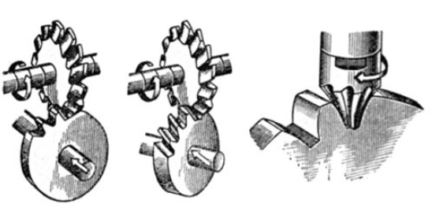
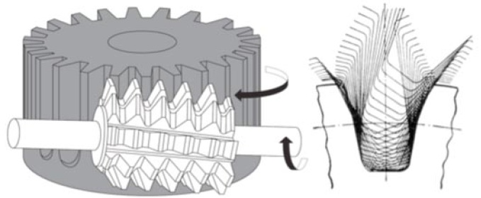
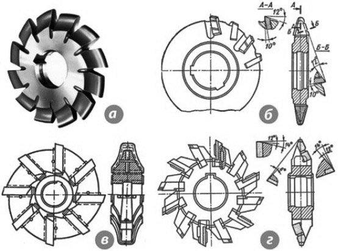
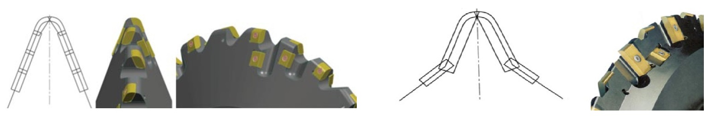
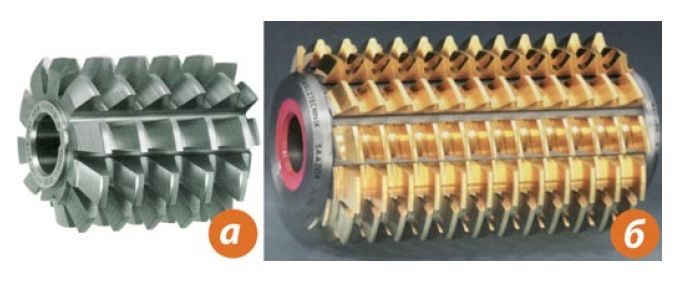

Часть из этих требований должна быть реализована за счет соответствующей конструкции зубчатых колес, часть - за счет технологии изготовления. Однако технология изготовления в любом случае должна обеспечивать возможность реализации конструктивных параметров с заданной конструкторской точностью.
В последние десятилетия в технологии обработки цилиндрических зубчатых колес произошли существенные изменения. В результате появилась возможность в несколько раз (а в некоторых случаях и в несколько десятков раз ) повысить производительность обработки зуба цилиндрических колес.
Упомянутые выше требования к редукторам и зубчатым колесам формируют все более жесткие требования к точности зубчатых колес.
Основными методами фрезерования зуба являются метод профильного фрезерования (метод копирования с единичным делением) и метод обкатного фрезерования. В первом случае инструментом являются дисковые модульные фрезы (реже пальцевые модульные фрезы), во втором - червячные фрезы.
До начала применения метода фрезерования обкатом червячными фрезами обработка зубьев производилась только методом профильногофрезерования. В этом случае инструмент - дисковая или пальцевая модульная фреза - в сечении имеет профиль, совпадающий с профилемзаданной впадины зуба. Обработка зуба производится подачей вдоль оси детали на всю длину одной впадины, после чего детальповорачивается на угол, соответствующий угловому шагу зубьев и обрабатывается следующая впадина. Этот процесс повторяется столько раз,сколько зубьев надо обработать. Необходимость поворачивать («делить») деталь на угловой шаг при обработке следующего зубаобуславливает другое название этого метода - метод единичного деления.
При обкатном фрезеровании обеспечивается непрерывная кинематическая связь между столом станка, на котором закреплена обрабатываемая деталь, и шпинделем, на котором закреплена червячная фреза. Зуб фрезы имеет профиль прямобочной рейки. В результате эвольвентный профиль зуба детали формируется огибающими прямыми, которые образуются при различных угловых положениях профиля зуба фрезы.
На отечественных предприятиях до сегодняшнего дня применяются классические конструкции зубофрезерного инструмента. К этим конструкциям для дисковых модульных фрез относятся: цельные быстрорежущие фрезы , напайные быстрорежущие фрезы , сборные быстрорежущие фрезы , напайные (сборные) твердосплавные фрезы и сборные твердосплавные фрезы.
Необходимо отметить, что современная технология обработки предполагает совершенно другие конструкции фрез. Практически повсеместно в технологически развитых странах при реализации современной технологии профильного фрезерования зуба применяются фрезы со сменными многогранными пластинами.
Принцип применения модульных фрез подразумевает, что профиль фрезы полностью соответствует профилю зуба обрабатываемой детали. Однако, если применяются раздельно фрезы для черновой и чистовой обработки, то профиль черновых фрез не обязательно должен полностью соответствовать профилю зуба детали с соответствующим припуском. Черновые фрезы могут прорезать предварительный прямобочный (неэвольвентный) профиль, могут формировать фаску на головке зуба, могут приближенно формировать эвольвентный профиль и могут формировать зуб с подрезанием (фреза с протуберанцем) для исключения обработки дна впадины при последующей чистовой обработке.
Для больших модулей боковая поверхность зуба фрезы формируется несколькими режущими пластинами.
Твердосплавная пластина чистовой фрезы имеет эвольвентный профиль, полностью соответствующий профилю обрабатываемого зуба. При необходимости чистовая фреза также может формировать фаску на головке зуба детали.
Сменные пластины могут иметь износостойкое покрытие, что позволяет существенно увеличить скорость резания при обработке и повысить производительность при одновременном повышении стойкости. Возможности нанесения покрытия на напайные пластины ограничены из-за напайного соединения, свойства которого могут измениться при нагревании до температуры нанесения покрытия.
Хотя метод профильного фрезерования является достаточно производительным, можно увеличить эффективность применения инструмента за счет одновременной обработки двух или трех впадин зубьев. Для этого применяются дуплексные (тандемные) и триплексные дисковые модульные фрезы. Дуплексные фрезы позволяют обрабатывать одновременно две впадины зубьев, триплексные фрезы обрабатывают одновременно три впадины (см. рисунок ниже).
Дисковые модульные фрезы со сменные твердосплавными пластинами работают на скоростях резания до 170 м/мин (в зависимости от модуля и прочности материала обрабатываемой детали) и подачах до 0,7 мм/зуб.
Основным инструментом применяемым для зубообработки в отечественном машиностроении является быстрорежущая червячная фреза из обычной быстрорежущей стали (типа Р6М5), как правило, без износостойкого покрытия (а). Применяются также сборные фрезы, состоящие из корпуса, выполненного из конструкционной стали, и поворотных быстрорежущих реек (б).
Современная технология, соответствующая мировому уровню, также подразумевает в качестве основного инструмента цельную червячную фрезу, но изготовленную из порошковой быстрорежущей стали и, обязательно, с современным износостойким покрытием.
Порошковая быстрорежущая сталь обладает более высокой твердостью и, одновременно, более высокой вязкостью, чем обычная быстрорежущая сталь. Это объясняется самой структурой материала - порошковая быстрорежущая сталь состоит из мелких равномерно распределенных карбидов, поэтому не имеет карбидной неоднородности и, практически, свободна от примесей и включений. В результате, червячная фреза из порошковой быстрорежущей стали с соответствующим износостойким покрытием может обрабатывать зубчатые колеса на скорости резания до 180 м/мин. Это обеспечивает как минимум двукратный рост производительности. За счет более высокой прочности порошковой быстрорежущей стали возможно также существенное увеличение подачи. Таким образом, применение современных инструментальных материалов позволяет реализовать принципиально новую технологию фрезерования зубчатых колес методом обката.
Одновременно с изменением инструментального материала и применением износостойкого покрытия меняется и конструкция современных червячных фрез. Для сокращения основного времени применяются фрезы с наименьшим возможным наружным диаметром. Применение инструментальных материалов высокой прочности позволяет существенно увеличить число стружечных канавок, что, в свою очередь, повышает производительность. Современная технология изготовления червячных фрез обеспечивает очень высокую их точность, что позволяет применять многозаходные фрезы без опасения потери точности обработки.
Более высокой точности обработки можно добиться применением червячных фрез с хвостовиками вместо фрез с посадочным отверстием. Современные зубофрезерные станки с ЧПУ имеют широкие возможности по реализации осевой передвижки фрезы в процессе обработки. Это приводит к значительному увеличению периода стойкости фрезы. Для полноценной реализации этой возможности современные фрезы имеют увеличенную по сравнению с традиционными фрезами длину рабочей части.
Основным критерием выбора того или иного метода обработки является экономическая эффективность. В данном случае (как впрочем, практически всегда при оценке эффективности обработки резанием) она определяется временем обработки и связанной с ним стоимостью инструмента.